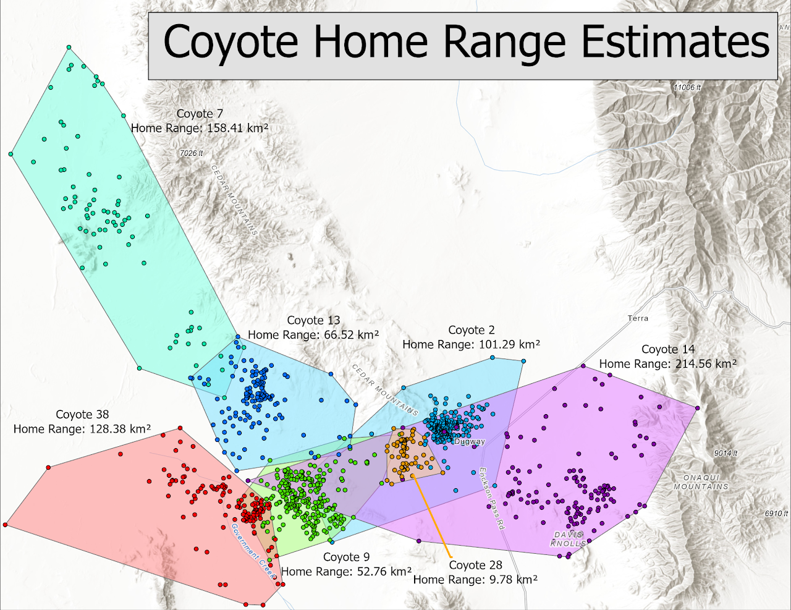
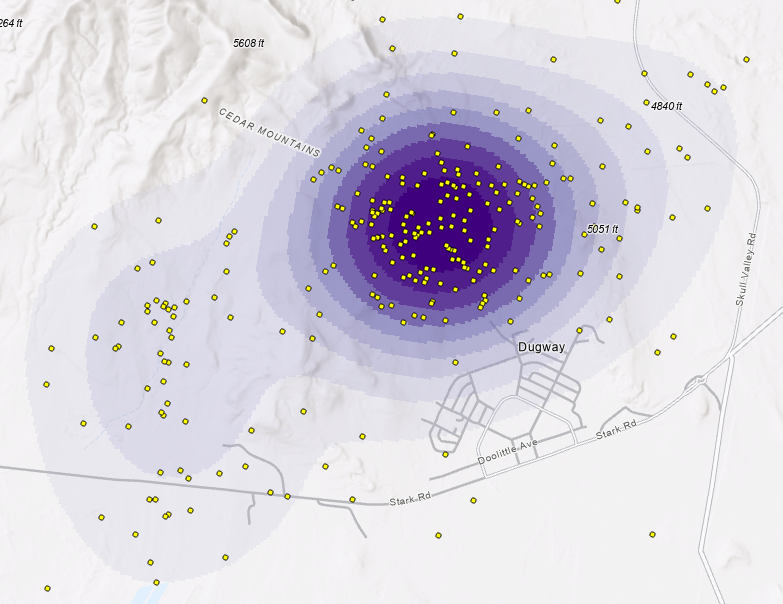
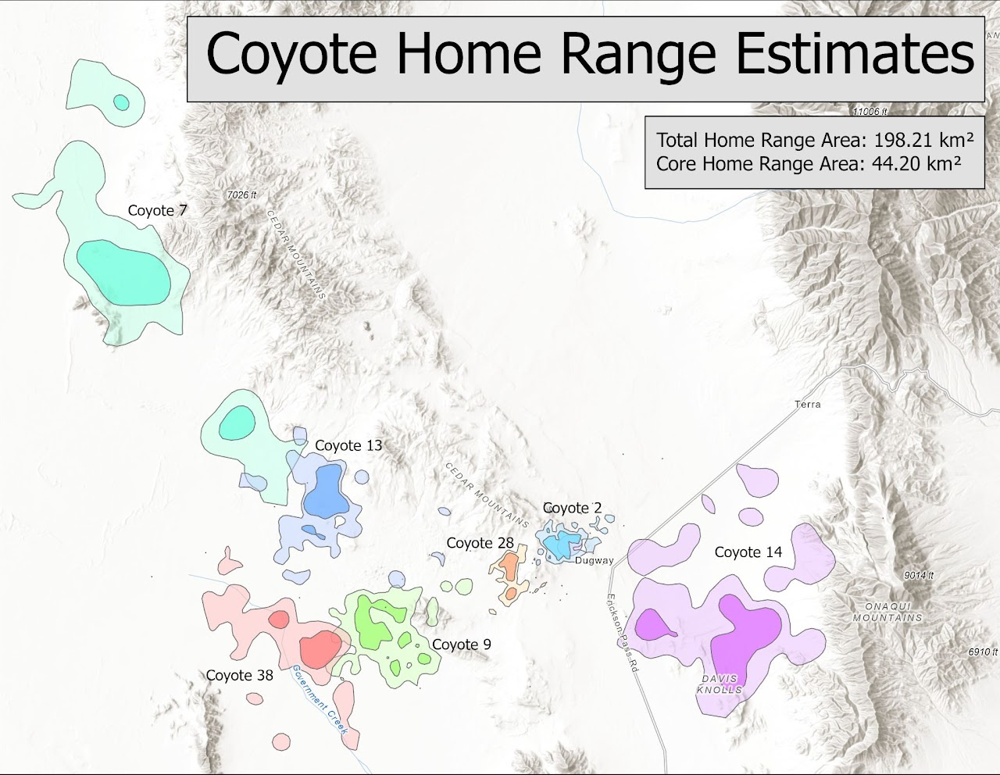
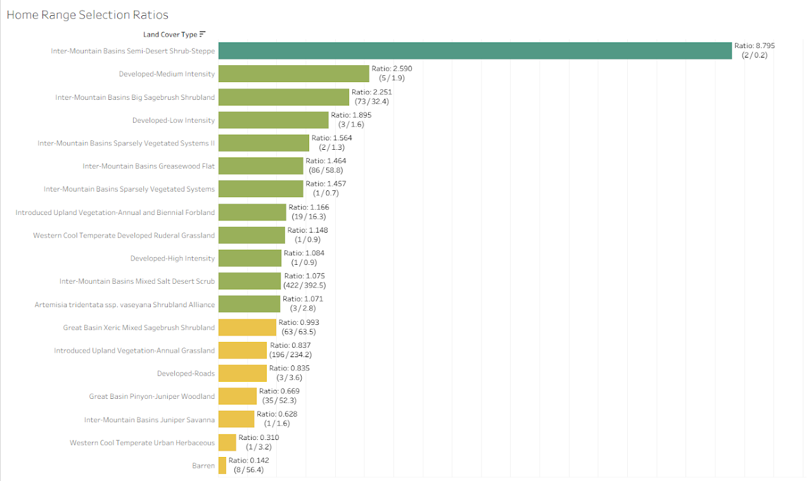

Home Range Analysis - A Geospatial Analysis of Coyote Movement Patterns
Using coyote tracking data, this project transforms raw location points into density surfaces to identify patterns of habitat use. It applies kernel density estimation and spatial statistics to quantify and visualize animal home ranges.
Behind the Data
The data used in this analysis comes from a subset of radio-collar records tracking seven individual coyotes. In total, 984 points were recorded, with information about each animal's sex, season (pup/pup rearing, breeding, dispersal), and territory, alongside XY coordinates and time of capture.
The analysis brings together home-range calculation methods, batch processing, Python, and spatial analysis to examine the different results.
Estimating Home Ranges - Minimum Convex Polygons
The first method used to estimate each coyote's home range was the Minimum Convex Polygon (MCP), the smallest convex polygon containing all recorded locations. This provides a straightforward baseline, but every point is included, so outliers can disproportionately extend the estimated range.

Only the outer points become polygon vertices. Sparse outliers and dense clusters otherwise receive equal consideration in the boundary, which motivates a method that represents intensity of use as well as extent.
Estimating Home Ranges - Kernel Density Surfaces

Kernel Density Estimation assigns weight to the area around each point rather than treating each record as only a discrete location. Each point contributes a uniform kernel, a three-dimensional curve following a normal distribution: highest at the recorded location and tapering toward zero with distance.
Aggregating the kernels creates a density surface. Areas with clustered locations receive higher density, while each recorded point contributes to the estimate.
To automate density-surface calculations across animals, the project uses an ArcPy script. Each home range includes a core range at the 50th percentile of density and a total range at the 5th percentile.

Home Range Selection Ratios
This visualization compares observed land-cover use with the number of observations expected if coyotes had no preference for a cover type. Expected counts are based on the total number of observations and the proportion of the total area occupied by each land-cover type.
Ratios above 1 indicate more recorded use than expected under that area-proportional baseline; ratios equal to 1 match the expected count; ratios below 1 indicate less use than expected. The Inter-Mountain Basins Semi-Desert Shrub Steppe has the highest reported ratio, but it is based on only two observations and covers just 0.2% of the area, so the result may be disproportionate.
